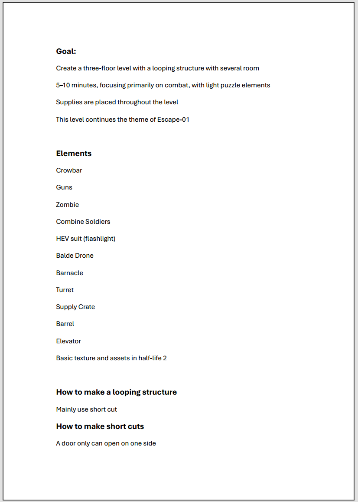
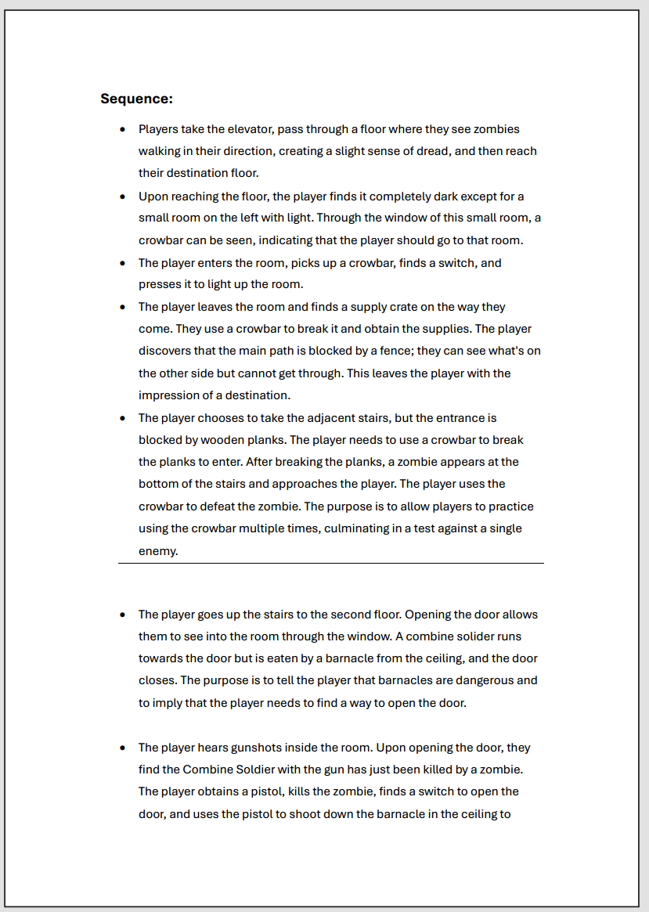
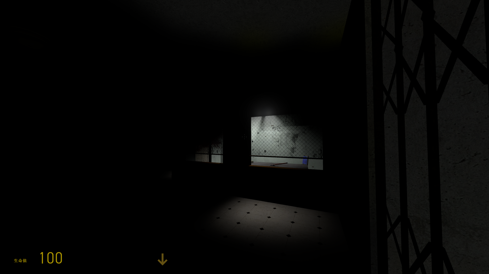
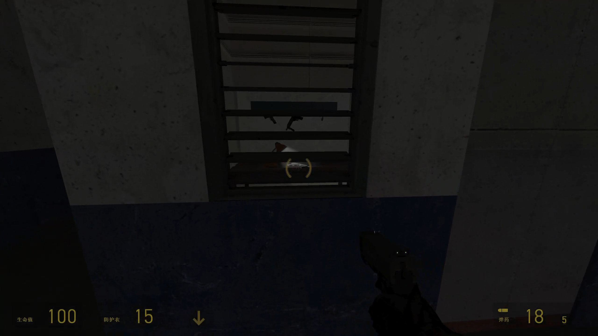
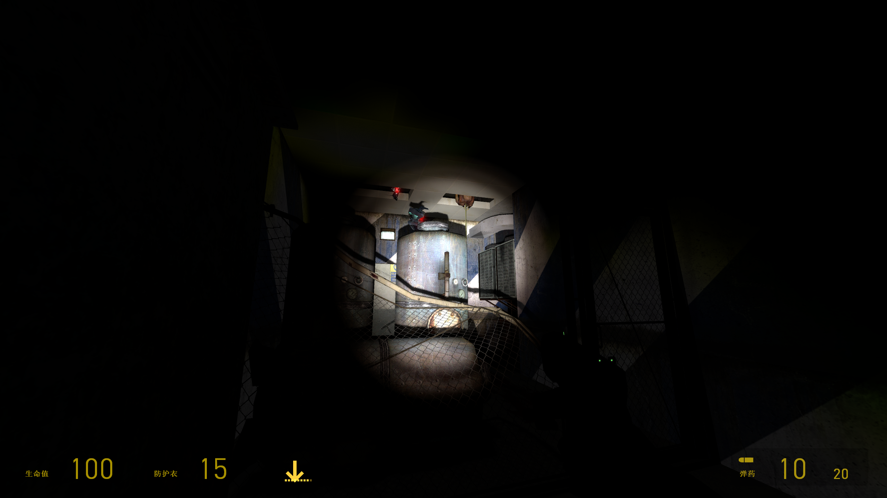

Level Design
Escape-02
Half-Life 2 Mod — Linear Level Design
Role
Level Design
Tools
Hammer Editor
Status
In Progress
Focus
Combat / Exploration
Credits
Individual Project
Duration
Dec 2025 - Present
Download
LinkOverview
This project is a Half-Life 2 mod currently in development, featuring a linear level focused on combat encounters and player exploration.
Design Goal
The goal of this level is to create a looping structure that reconnects to earlier areas, allowing players to unlock shortcuts and develop a stronger understanding of the space.
Design Process
1
Planning & Feasibility

At the beginning, I figure out the goal of the level, what I want it to focus on, how large it should be, and what kind of gameplay it's built around. For this level, I defined a three-floor structure, focusing on a looping shortcut design. Then, based on these goals, I list out the elements I want to include and what I can use in the level. After that, I start thinking about how these elements can be used to achieve the design goal. I note down different ideas, whether they are fully workable or not, and keep updating them as the design develops. For this level, I decided to approach the looping structure through shortcuts. These shortcuts can take different forms, such as doors that can only be opened from one side, or breakable walls that connect back to earlier areas.
2
Sequences

At this stage, I write out sequences to define what the player will encounter, what kind of experience they will have, and the purpose of each segment. For example, early in the level, the player takes an elevator that passes by a floor with two zombies, building tension before entering the first area. I keep the opening space in darkness to support the 'escape' atmosphere. After the player obtains the crowbar, they must break wooden boards instead of opening a door, forcing them to learn how to attack through interaction. By planning these sequences, I can define what happens in each part of the level and check whether these ideas align with the design goal, making sure the direction of the design stays consistent.
Questioning & Idea Development
While writing the sequences, I also keep questioning my own design and thinking about possible solutions. This allows me to adjust and refine the level as I go. I make sure to write down ideas that come up during the process, even if they are not immediately useful. For example, the turret placement in this level was an idea that came up early, and I later found a way to integrate it into the design.
3
Layout Sketches
Once the sequences are defined, I start sketching layouts on paper based on them. The goal is to get a rough sense of the space and check whether the layout and enemy placement feel reasonable. In this level, I mainly focus on whether the layout supports the shortcut system used for the looping structure. I consider where shortcuts should be placed, how many areas they should be spaced across, and whether there are too many turns that might affect readability. At a smaller scale, I also use each area to test whether it supports the intended sequence. For example, I check if supply placements are easy for the player to notice, and how enemies move within the space, such as whether they can effectively approach the player from specific positions.
4
Implementation and Iteration
At this stage, I begin implementing the level in the Hammer Editor to see how the design works in practice. Since the sketches don’t strictly account for scale, I constantly adjust the layout and ideas during implementation. I also test whether certain setups are actually feasible, and iterate on the design based on what works and what doesn’t. In this level, I made multiple adjustments to materials, enemy trigger timing, and lighting placement to refine the overall experience.
Some design approaches
Environmental Guidance

When the player first encounters the turret, it fires at nearby zombie, clearly showing the threat. At the same time, I use layered environmental cues to guide the player toward safety. The direction of the lighting, blood stains, and overhead pipes all point toward the staircase on the left. The placement of barrels near the gate further reinforces this path.
Teaching Through Gameplay


After obtaining the crowbar, the player is presented with a supply crate that encourages them to practice attacking. Even if they ignore it, they must break wooden boards to continue. Destroying the boards triggers a zombie that blocks the player’s path, requiring them to apply the same action in a real encounter. This sequence teaches the mechanic through gameplay, moving from safe practice to forced application.
Scripted Events for teaching


I use scripted events to introduce enemy behavior. When the player opens the door, a triggered sequence reveals the barnacle and demonstrates its attack pattern.
Guiding Player Behavior Through Visual Framing

When the player backtracks after triggering the mechanism, they are immediately presented with an explosive barrel and an enemy aligned in view. I try to use this to encourage the player to shoot the barrel.







Reflection
At this stage, the second-floor shortcut is functioning as intended, allowing the player to loop back to an area near the starting point. Most of the planned scripted elements are also working reliably. One of the main challenges has been managing the complexity of the three-floor structure. After establishing the second floor, I realized that its layout directly impacts the scale and content of the first floor, as well as how the basement level could be integrated. To handle this, I focused on defining key connection points such as staircases, elevators, and pipes, and reserved space for them early. This helps maintain flexibility as the layout evolves. If the scope becomes too large, I may simplify the design by removing the basement level. I also realized that shortcuts need clear motivation. They should serve a purpose, such as leading to supplies or unlocking previously inaccessible paths. Without a clear reason, players may not feel encouraged to activate or use them.
Playable Build
How to Play
This level is provided as a .bsp file.
Place the file into:
Steam\steamapps\common\Half-Life 2\hl2\maps
Then launch Half-Life 2 and type:
map escape_02
in the console.